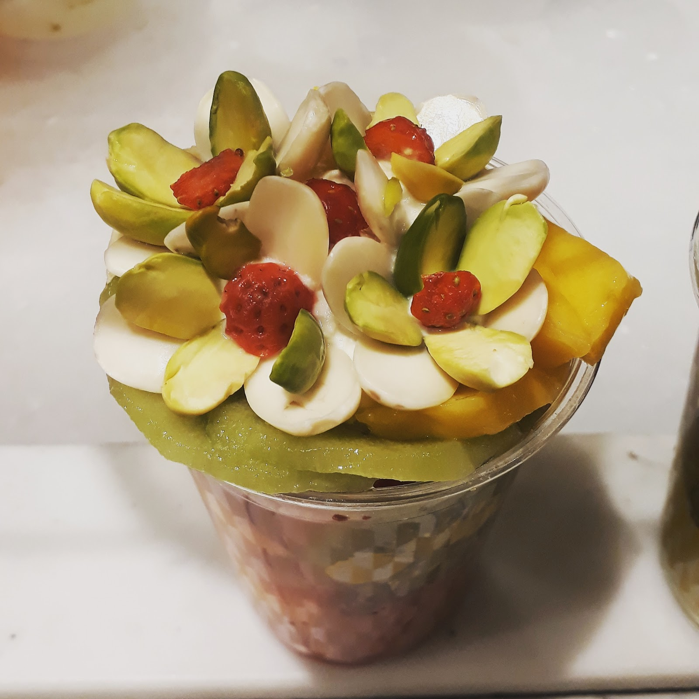
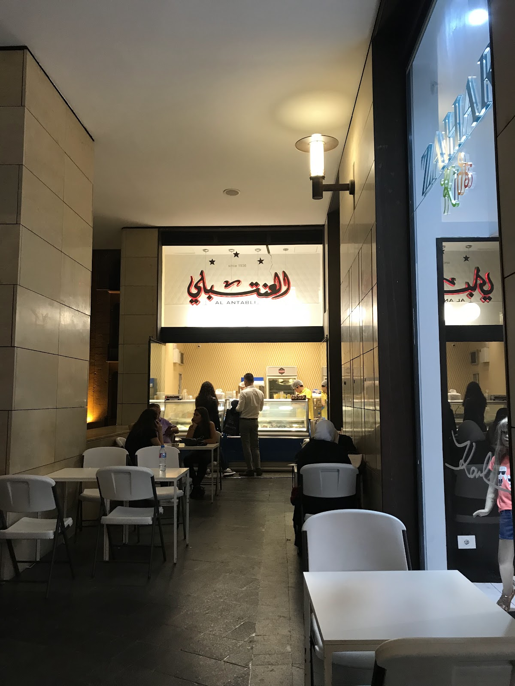
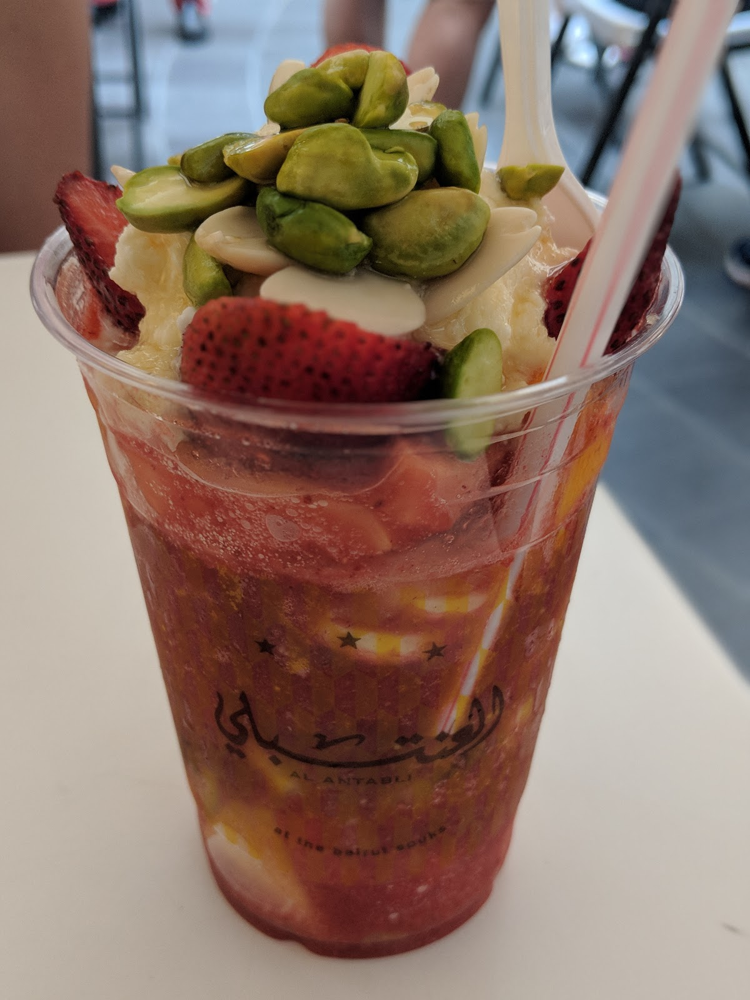
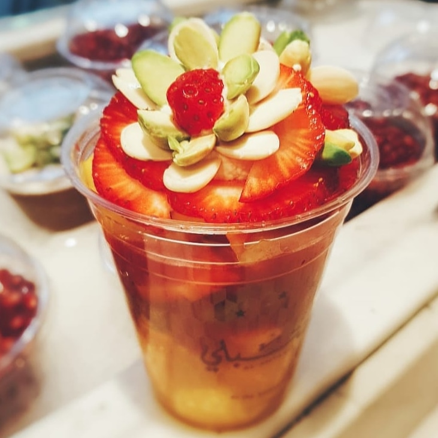
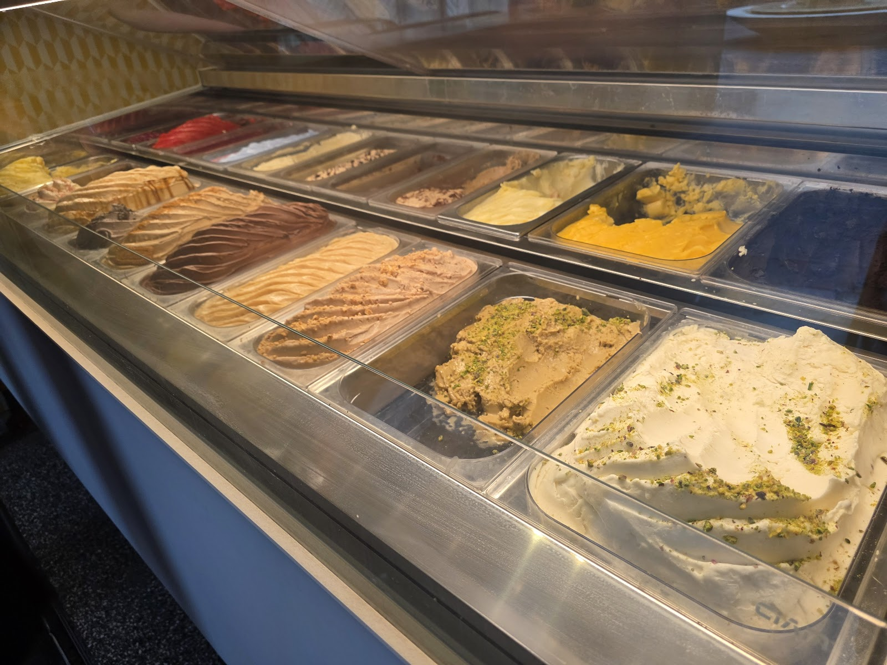

4.3




As I was at work, I ordered an avocado juice cocktail from this place. The order came on time. The portion was good. I loved the fruits that were on top. The avocado juice was amazing. I loved it.Antoun Boustani
We always pass by Al-antabli whenever we visit beirut souks. Best mango and passion fruit ice-cream ever.Dania Haddad
01 991 212
71 117 556
| 9:30 AM–10:45 PM | |
| 9:30 AM–10:45 PM | |
| 9:30 AM–10:45 PM | |
| 9:30 AM–10:45 PM | |
| 9:30 AM–10:45 PM | |
| 9:30 AM–10:45 PM | |
| 9:30 AM–10:45 PM |
Souk Ayass, Beirut Souks, Beirut
+961 1 991 212